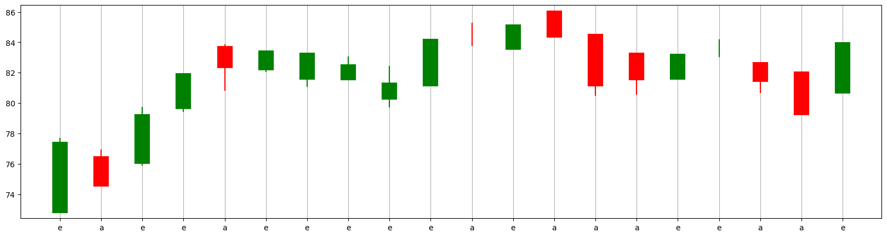
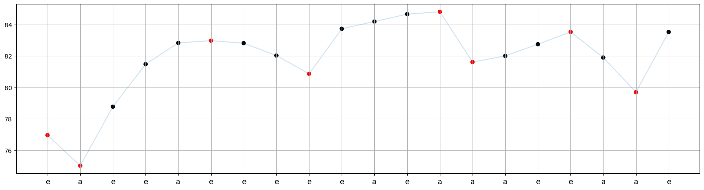

Coding#
import yfinance as yf
import numpy as np
import matplotlib.pyplot as plt
import pandas as pd
import statistics
from sklearn.metrics import accuracy_score
Data#
The following function returns a tuple containing the training and test datasets for a specified stock and time period.
The training_ratio parameter represents the percentage of data allocated to the training set.
def get_training_test_data(stock='AMZN', start='2019-1-1', end='2021-1-31', training_ratio=0.96):
df = yf.Ticker(stock).history(start=start, end=end)
df = df.iloc[:,:-3]
df.reset_index(inplace=True)
df['Date'] = [i.date() for i in df.Date]
df['fcc'] = [np.sign(df.Close.loc[i+1]-df.Close.loc[i]) for i in range(len(df)-1)]+[np.nan]
training_length = int(len(df)*training_ratio)
training_data = df.iloc[:training_length,:]
test_data = df.iloc[training_length:,:]
test_data.reset_index(inplace=True, drop=True)
return (training_data, test_data)
df_train, df_test = get_training_test_data()
df_train.shape, df_test.shape
((503, 6), (21, 6))
df_train.head()
| Date | Open | High | Low | Close | fcc | |
|---|---|---|---|---|---|---|
| 0 | 2019-01-02 | 73.260002 | 77.667999 | 73.046501 | 76.956497 | -1.0 |
| 1 | 2019-01-03 | 76.000504 | 76.900002 | 74.855499 | 75.014000 | 1.0 |
| 2 | 2019-01-04 | 76.500000 | 79.699997 | 75.915497 | 78.769501 | 1.0 |
| 3 | 2019-01-07 | 80.115501 | 81.727997 | 79.459503 | 81.475502 | 1.0 |
| 4 | 2019-01-08 | 83.234497 | 83.830498 | 80.830498 | 82.829002 | 1.0 |
df_test.head()
| Date | Open | High | Low | Close | fcc | |
|---|---|---|---|---|---|---|
| 0 | 2020-12-30 | 167.050003 | 167.104996 | 164.123505 | 164.292496 | -1.0 |
| 1 | 2020-12-31 | 163.750000 | 164.145996 | 162.059998 | 162.846497 | -1.0 |
| 2 | 2021-01-04 | 163.500000 | 163.600006 | 157.201004 | 159.331497 | 1.0 |
| 3 | 2021-01-05 | 158.300507 | 161.169006 | 158.253006 | 160.925507 | -1.0 |
| 4 | 2021-01-06 | 157.324005 | 159.875504 | 156.557999 | 156.919006 | 1.0 |
Visualization#
def cs_visualize(hp, op, cp, lp, x=0, details=False, linewidth=20):
if cp > op: color = 'green'
elif cp < op: color = 'red'
else: color ='black'
plt.plot([x,x], [lp, hp], c=color)
if cp != op:
plt.plot([x,x], [op, cp], c=color, linewidth=linewidth)
else:
plt.plot([x-0.1,x+0.1], [op, cp], c=color, linewidth=1)
if details:
plt.text(x+0.01, hp, 'high')
plt.text(x+0.01, lp , 'low')
plt.text(x+0.01, cp, 'close')
plt.text(x+0.01, op, 'open')
def cs_visualize_df(data, M=0, N=None):
plt.figure(figsize=(20,5))
for i in data.index[M:N]:
hp, op, cp, lp = data[['High','Open', 'Close', 'Low']].loc[i]
cs_visualize(hp, op, cp, lp, x=i)
cs_visualize_df(df_train, M=0, N=20)
Encoding#
def encoder(hp, op, cp, lp):
if hp > op > cp > lp: return 'a'
if hp == op > cp > lp: return 'b'
if hp == op > cp == lp: return 'c'
if hp > op > cp == lp: return 'd'
if hp > cp > op > lp: return 'e'
if hp == cp > op > lp: return 'f'
if hp == cp > op == lp: return 'g'
if hp > cp > op == lp: return 'h'
if hp > op == cp > lp: return 'i'
if hp == op == cp > lp: return 'j'
if hp == op == cp == lp: return 'k'
if hp > op == cp == lp: return 'l'
def df_encoder(data):
data_ = data.copy()
encoder_list = []
for i in data_.index:
hp, op, cp, lp = data_[['High','Open', 'Close', 'Low']].loc[i]
encoder_list.append(encoder(hp, op, cp, lp))
data_['code'] = encoder_list
return data_
df_train = df_encoder(df_train)
df_train.head().round(2)
| Date | Open | High | Low | Close | fcc | code | |
|---|---|---|---|---|---|---|---|
| 0 | 2019-01-02 | 73.26 | 77.67 | 73.05 | 76.96 | -1.0 | e |
| 1 | 2019-01-03 | 76.00 | 76.90 | 74.86 | 75.01 | 1.0 | a |
| 2 | 2019-01-04 | 76.50 | 79.70 | 75.92 | 78.77 | 1.0 | e |
| 3 | 2019-01-07 | 80.12 | 81.73 | 79.46 | 81.48 | 1.0 | e |
| 4 | 2019-01-08 | 83.23 | 83.83 | 80.83 | 82.83 | 1.0 | a |
The chart below illustrates the candlestick charts along with their corresponding codes.
cs_visualize_df(df_train, M=0, N=20)
plt.xticks(range(0,20), df_train.code[0:20])
plt.grid(axis='x');

Change Points#
def change_points(data):
data_ = data.copy()
change_pts, change_types = [True], ['Start']
for i in range(1, len(data_)-1):
left_change = int(np.sign(data_['Close'][i]-data_['Close'][i-1]))
right_change = int(np.sign(data_['Close'][i+1]-data_['Close'][i]))
if left_change != right_change:
change_pts.append(True)
else:
change_pts.append(False)
change_types.append((left_change, right_change))
change_pts.append(False)
change_types.append('End')
data_['change_points'] = change_pts
data_['change_types'] = change_types
return data_
df_train = change_points(df_train)
df_train.head().round(2)
| Date | Open | High | Low | Close | fcc | code | change_points | change_types | |
|---|---|---|---|---|---|---|---|---|---|
| 0 | 2019-01-02 | 73.26 | 77.67 | 73.05 | 76.96 | -1.0 | e | True | Start |
| 1 | 2019-01-03 | 76.00 | 76.90 | 74.86 | 75.01 | 1.0 | a | True | (-1, 1) |
| 2 | 2019-01-04 | 76.50 | 79.70 | 75.92 | 78.77 | 1.0 | e | False | (1, 1) |
| 3 | 2019-01-07 | 80.12 | 81.73 | 79.46 | 81.48 | 1.0 | e | False | (1, 1) |
| 4 | 2019-01-08 | 83.23 | 83.83 | 80.83 | 82.83 | 1.0 | a | False | (1, 1) |
df_train = change_points(df_train)
df_train.tail().round(2)
| Date | Open | High | Low | Close | fcc | code | change_points | change_types | |
|---|---|---|---|---|---|---|---|---|---|
| 498 | 2020-12-22 | 160.14 | 161.10 | 159.00 | 160.33 | -1.0 | e | True | (1, -1) |
| 499 | 2020-12-23 | 160.25 | 160.51 | 159.21 | 159.26 | -1.0 | a | False | (-1, -1) |
| 500 | 2020-12-24 | 159.70 | 160.10 | 158.45 | 158.63 | 1.0 | a | True | (-1, 1) |
| 501 | 2020-12-28 | 159.70 | 165.20 | 158.63 | 164.20 | 1.0 | e | False | (1, 1) |
| 502 | 2020-12-29 | 165.50 | 167.53 | 164.06 | 166.10 | -1.0 | e | False | End |
def cp_visualizer(data, M=0, N=None):
plt.figure(figsize=(20,5))
plt.plot(data.index[M:N], data.Close[M:N], alpha=0.2)
color_list = ['black', 'red']
plt.scatter(data.index[M:N], data.Close[M:N], c=[color_list[i] for i in data.change_points[M:N]])
plt.xticks(data.index[M:N], data.code[M:N], fontsize=12)
plt.grid();
In the graph of Close values below, the red points indicate the change points, while the x-values correspond to the candlestick code for each corresponding day.
cp_visualizer(df_train, M=0, N=20)

Segmentation and Labeling#
def segmentation(data):
segment_list, trend_list = [], []
pattern = ''
for i in range(len(data)-1):
pattern += data.code[i]
if data.change_points.loc[i]:
segment_list.append(pattern)
j = i
while True:
if data.change_types[j+1][0] != 0: # first non-equal direction
trend_list.append(data.change_types[j+1][0])
break
j += 1
pattern = ''
df_seg = pd.DataFrame()
df_seg['kts'] = segment_list
df_seg['trend'] = trend_list
df_seg_unique = pd.DataFrame(df_seg.value_counts()).reset_index()
return df_seg_unique
PSet = segmentation(df_train)
PSet.head()
| kts | trend | count | |
|---|---|---|---|
| 0 | a | 1 | 58 |
| 1 | e | -1 | 47 |
| 2 | aa | 1 | 23 |
| 3 | ee | -1 | 15 |
| 4 | e | 1 | 9 |
Subsequence#
def whethersub(X, Y):
if len(X) > len(Y): return 0
else:
k = 0
for i in range(len(X)):
if X[i] in Y[k:]:
k = Y.find(X[i], k)+1
else:
return 0
return 1
oNum#
def onum(pset):
pset_ = pset.copy()
onum_list = []
for i in range(len(pset)):
total = 0
for j in range(len(pset)):
total += whethersub(pset_.loc[i, 'kts'], pset_.loc[j, 'kts'])* pset_.loc[j, 'count']
onum_list.append(total)
pset_['onum'] = onum_list
return pset_
PRSet = onum(PSet)
PRSet.head()
| kts | trend | count | onum | |
|---|---|---|---|---|
| 0 | a | 1 | 58 | 154 |
| 1 | e | -1 | 47 | 146 |
| 2 | aa | 1 | 23 | 58 |
| 3 | ee | -1 | 15 | 60 |
| 4 | e | 1 | 9 | 146 |
sameTrendNum#
def sametrendnum(pset):
pset_ = pset.copy()
sametrendnum_list = []
for i in range(len(pset_)):
total = 0
for j in range(len(pset_)):
if whethersub(pset_.loc[i,'kts'], pset_.loc[j,'kts']) & (pset_.loc[i,'trend'] == pset_.loc[j, 'trend']):
total += pset_.loc[j, 'count']
sametrendnum_list.append(total)
pset_['sametrendnum'] = sametrendnum_list
return pset_
PRSet = sametrendnum(PRSet)
PRSet.head()
| kts | trend | count | onum | sametrendnum | |
|---|---|---|---|---|---|
| 0 | a | 1 | 58 | 154 | 111 |
| 1 | e | -1 | 47 | 146 | 115 |
| 2 | aa | 1 | 23 | 58 | 47 |
| 3 | ee | -1 | 15 | 60 | 56 |
| 4 | e | 1 | 9 | 146 | 31 |
PACC#
def pacc(pset):
pset_ = pset.copy()
pset_['pacc'] = pset_['sametrendnum'] / pset_['onum']
return pset_
PRSet = pacc(PRSet)
PRSet.head().round(2)
| kts | trend | count | onum | sametrendnum | pacc | |
|---|---|---|---|---|---|---|
| 0 | a | 1 | 58 | 154 | 111 | 0.72 |
| 1 | e | -1 | 47 | 146 | 115 | 0.79 |
| 2 | aa | 1 | 23 | 58 | 47 | 0.81 |
| 3 | ee | -1 | 15 | 60 | 56 | 0.93 |
| 4 | e | 1 | 9 | 146 | 31 | 0.21 |
The set described above is called the Pattern Record Set (PRSet).
It consists of KTS-Trend pairs (KtsP) and their corresponding Pattern Accuracy Score (PACC) values.
Subsequence Model#
def subsequence_model_predict(kts, prset):
best_pattern = []
best_pacc = [0]
best_trend = []
for i in range(len(prset)):
if (whethersub(prset.loc[i, 'kts'], kts)):
if prset.loc[i, 'pacc'] > best_pacc[-1]:
best_pattern = [prset.loc[i, 'kts']]
best_pacc = [prset.loc[i, 'pacc']]
best_trend = [ prset.loc[i, 'trend']]
elif prset.loc[i, 'pacc'] == best_pacc[-1]:
best_pattern.append(prset.loc[i, 'kts'])
best_pacc.append(prset.loc[i, 'pacc'])
best_trend.append(prset.loc[i, 'trend'])
if len(best_trend) == 0:
pred = statistics.mode(prset.trend)
elif len(best_trend) == 1:
pred = best_trend[0]
else:
pred = statistics.mode(best_trend)
return {'Best Pattern':best_pattern, 'Best PACC': best_pacc, 'Best Trend': best_trend, 'Prediction':pred}
subsequence_model_predict('aaee', PRSet)
{'Best Pattern': ['ee'],
'Best PACC': [0.9333333333333333],
'Best Trend': [-1],
'Prediction': -1}
subsequence_model_predict('acd', PRSet)
{'Best Pattern': ['a'],
'Best PACC': [0.7207792207792207],
'Best Trend': [1],
'Prediction': 1}
Test Set#
df_test.head().round(2)
| Date | Open | High | Low | Close | fcc | |
|---|---|---|---|---|---|---|
| 0 | 2020-12-30 | 167.05 | 167.10 | 164.12 | 164.29 | -1.0 |
| 1 | 2020-12-31 | 163.75 | 164.15 | 162.06 | 162.85 | -1.0 |
| 2 | 2021-01-04 | 163.50 | 163.60 | 157.20 | 159.33 | 1.0 |
| 3 | 2021-01-05 | 158.30 | 161.17 | 158.25 | 160.93 | -1.0 |
| 4 | 2021-01-06 | 157.32 | 159.88 | 156.56 | 156.92 | 1.0 |
df_test = df_encoder(df_test)
df_test.head().round(2)
| Date | Open | High | Low | Close | fcc | code | |
|---|---|---|---|---|---|---|---|
| 0 | 2020-12-30 | 167.05 | 167.10 | 164.12 | 164.29 | -1.0 | a |
| 1 | 2020-12-31 | 163.75 | 164.15 | 162.06 | 162.85 | -1.0 | a |
| 2 | 2021-01-04 | 163.50 | 163.60 | 157.20 | 159.33 | 1.0 | a |
| 3 | 2021-01-05 | 158.30 | 161.17 | 158.25 | 160.93 | -1.0 | e |
| 4 | 2021-01-06 | 157.32 | 159.88 | 156.56 | 156.92 | 1.0 | a |
def test_data_prep(data, N=5):
test_data = []
for i in range(len(data)-N):
kts = ''
for j in range(N):
kts += data.code.loc[i+j]
test_data.append((kts, data.fcc.loc[i+j]))
if type(test_data[-1][-1]) != float:
test_data.pop()
return test_data
test_data = test_data_prep(df_test)
test_data
[('aaaea', 1.0),
('aaeae', 1.0),
('aeaee', -1.0),
('eaeea', 1.0),
('aeeae', 1.0),
('eeaee', -1.0),
('eaeea', -1.0),
('aeeaa', 1.0),
('eeaae', 1.0),
('eaaee', 1.0),
('aaeee', -1.0),
('aeeea', 1.0),
('eeeaa', 1.0),
('eeaae', -1.0),
('eaaea', 1.0)]
Prediction#
def subsequence_model_score(data, prset):
pred_trend_test = [subsequence_model_predict(kts, prset)['Prediction'] for (kts,trend) in data]
actual_trend_test = [trend for (kts,trend) in data]
return accuracy_score(pred_trend_test, actual_trend_test)
subsequence_model_score(test_data, PRSet)
0.6